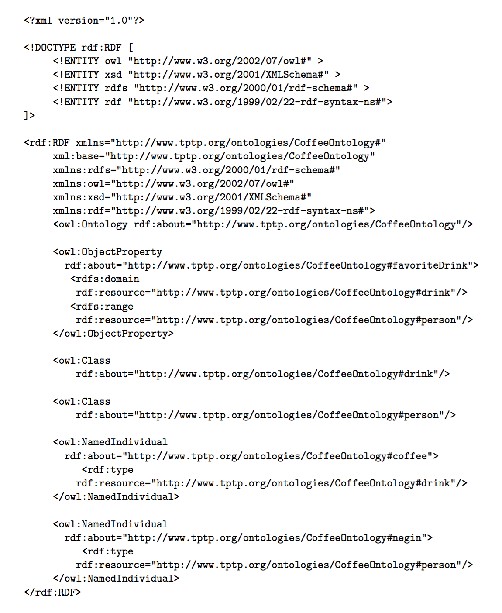

Description Logic Form

The TPTP Infrastructure
Adding Description Logic
- State-of-the-Art
- Data: Fragmented collections, XML-based languages, more (help!)
- Tools: Protege-OWL API, Protege, more (help!)
- TPTP DLF
- Data: As for existing TPTP logical forms
- Tools: As for existing TPTP logical forms
- First Steps
- DLF language (click)
- Translate to DLF from collections, using Protege-API
- Export RDF/XML from TPTP, using TPTP2X